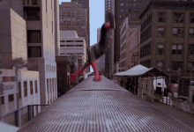
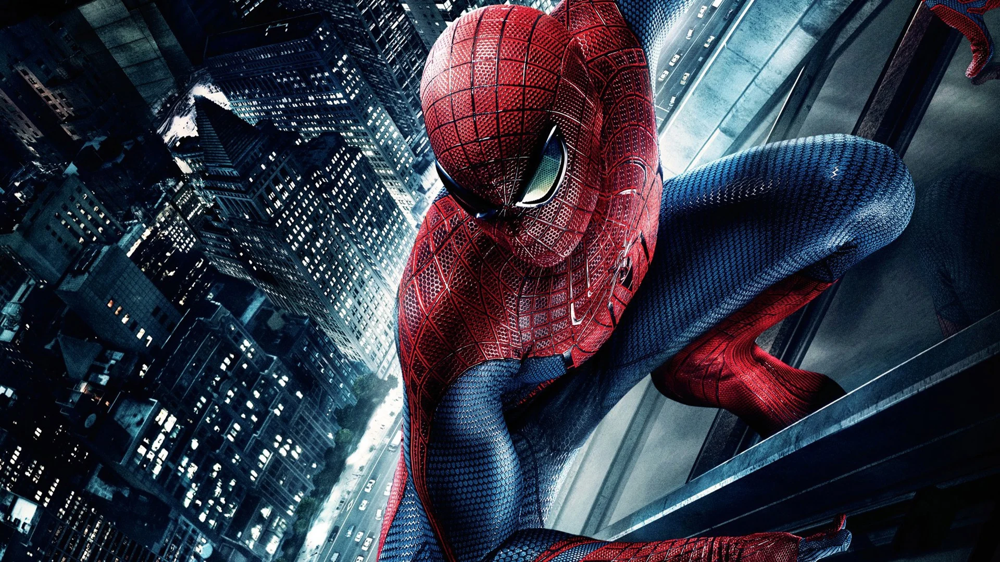

Desenvolvidas em âmbito curricular durante a UC de Desenho de Tipos, LDC, lecionada por Pedro Amado, durante o primeiro semestre do Ano Letivo de 2025/2026, este corpo de trabalho reúne três famílias distintas: Greg, Viariavel e Récréation, cada uma explorando diferentes vertentes da tecnologia Variable Font, desde a recuperação vernacular e à experimentação e desconstrução modular.
A Greg é um exercício de subversão. Partindo de uma estrutura sans-serif estreita e neutra, inspirado em modelos funcionais como a Arial, o objetivo era dotá-la de uma presença inegável.
Esta tipografia possui um eixo de peso variável que a transforma por completo. Nos seus formatos mais leves, é contida e elegante. No entanto, à medida que o peso aumenta, a Greg ganha volume de forma expressiva e assimétrica, ganhando contraste permanecendo fiel a características do peso Regular. Os seus espaços internos e externos fecham-se dramaticamente, fazendo com que a letra se converta num bloco quase sólido de mancha.

Inspirada num mural publicitário da histórica fábrica Viarco, a Viariavel é um exercício de preservação e renovação do visual original. A fonte mantém a identidade visual divertida da marca portuguesa, transitando suavemente entre um estilo leve e caligráfico e uma aparência mais estruturada e contemporânea.
O design permite alterações estruturais, transformando a aparência da fonte de cantos rígidos e quadrados para curvas suaves e arredondadas. Esta versatilidade é ainda complementada por um efeito inspirado na repetição de traços de 'doodles', que confere aos glifos uma expansão visual única.
A fonte neste momento contem glifos maiúsculos A-Z. Colaboração com Ana Coelho.
Se as regras da tipografia existem para garantir a legibilidade, a Récréation existe para questionar essas regras. O objetivo foi criar uma ferramenta onde o uso é intuitivo, mas o resultado é imprevisível.
Baseada numa grelha Uniwidth, esta família existe para explorar a modularidade e a estrutura dos caracteres. O foco do desenvolvimento esteve na programação OpenType de ligaduras e glifos alternativos. O utilizador é convidado a jogar com os glifos como se fossem blocos de construção, gerando "neo-formas", texturas e composições onde a palavra se torna a imagem. É uma fonte desenhada para ser desconstruída.
A fonte neste momento contem glifos maiúsculos A-Z, e até 8 glifos diferentes por letra para diferentes necessidades.